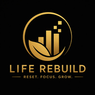

Do you plan to study, then waste hours scrolling?
LifeRebuild gives you focus sessions, daily missions, and visible progress so your day does not disappear into the glowing rectangle of doom.

LifeRebuild Start ResetLifeRebuild helps students and self-improvement seekers beat procrastination, build better routines, track habits, stay focused, journal daily, and create the system needed to change their entire life.
Today’s Reset
If motivation was enough, your life would already be fixed. Annoying, yes. True, also yes.
LifeRebuild gives you focus sessions, daily missions, and visible progress so your day does not disappear into the glowing rectangle of doom.
Track streaks, completion, notes, and progress so consistency becomes measurable instead of imaginary.
Use routines, focus blocks, reviews, and reports to see what actually moved your life forward.
The 90-day reset structure gives you a clear path: habits, focus, journaling, challenges, and weekly reflection.
LifeRebuild turns self-improvement into a daily operating system. Open it, check your habits, complete tasks, journal your thoughts, earn points, unlock rewards, collect badges, and review your progress.
LifeRebuild makes self-improvement feel like progress you can see. Complete tasks, write journal entries, finish focus sessions, build streaks, and unlock badges as proof that you are becoming consistent.
Every completed habit, focus session, journal entry, and challenge gives users points so progress feels immediate.
Morning and night reflections become part of the reward loop, helping users clear their mind while still building momentum.
Users collect badges for consistency, streaks, focus, reflection, and daily wins. Tiny digital trophies, because apparently brains love shiny proof.
The app connects habits, routines, focus, journaling, rewards, and reviews into one daily system designed for long-term change.
Dummy screenshots are included for now. Replace these with your real app screenshots later. Revolutionary, I know: placeholders doing placeholder things.
Score, streaks, missions, quote, quick actions.
Track habits, notes, streaks, completion.
Pomodoro sessions, task notes, focus logs.
Morning and night prompts that reward consistency.
See progress, consistency, and weekly review.
Earn points for tasks and unlock rewards.
Not one tiny tracker pretending to be a life transformation system. LifeRebuild combines habits, focus, journaling, points, rewards, badges, and reviews into the system users need to change their entire life.
Bundle LifeRebuild with these bonuses so buyers feel they are getting a full reset kit, not just another app icon they will ignore by Tuesday.
You want to study better, scroll less, fix your routine, earn points for progress, and stop depending on last-minute panic as a productivity strategy.
You want to become disciplined but need structure, tracking, and daily guidance instead of random motivational videos.
You want one simple system for habits, focus, journaling, and progress without managing ten separate apps.
Get the LifeRebuild app plus the complete reset kit bonuses.
Replace this button link with your Gumroad, Razorpay, Instamojo, or payment page URL.
No. It is built especially for students, but anyone who wants better habits, focus, routines, and consistency can use it.
No. That is the point. LifeRebuild gives you a daily structure so you are not waiting for motivation like it is a delayed train.
Yes. The landing page and app are designed mobile-first, and the app works as a PWA.
It helps users stop drifting, build daily discipline, earn points for progress, unlock rewards, and follow a structured 90-day system for changing their habits, routine, focus, and life direction.
Users earn points for completing tasks, habits, focus sessions, journal entries, and challenges. Points help unlock rewards and badges, making consistency feel visible and satisfying.